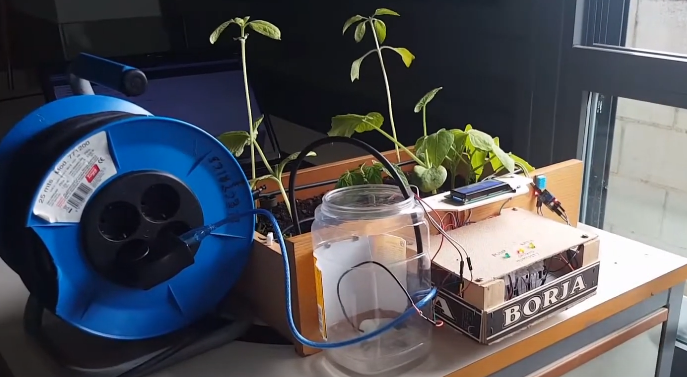

Presentación
Hola que tal soy una persona que le gusta mucho la tecnología y hablar sobre comidas típicas , este es mi portafolio persona aquí conocerás un poco sobre mi , mis cualidades , habilidades y las cosas que mas me gustan hacer durante el día a día.
aqui encontraras , como puedas contactarme , informacion mas personal y muchas cosas , pasate por la diferentes secciones , como : sobre mi , habilidades , mis proyectos que eh realizado y para que me puedas contactar
Sobre mí
Hola me llamo Bryan son estudiante de la UTB actualmente me encuentro estudiando , estudio en la jornada matutina , vivo en Babahoyo , me dedico a un poco a el desarrollo web voy aprendiendo poco a poco , me gusta mucho practicar , soy una persona que le gusta ver películas ,
me encanta siempre estar involucrado en nuevos proyectos en donde puedo aprender cosas nuevas relacionada a la tecnología , me gusta mucho tambien la tecnología me gusta mantenerme informado de cualquier innovación ver videos sobre ellos y las nuevas herramientas que se utilizan
ahora y que se van actualizando con el paso del tiempo , tambien soy una persona que le gusta mucho la música , tambien estuve en un curso donde aprendi a manejar drones de todo tipo de uso
escucho todo tipo de música no hay un pero solo escucho y me relajo con la música , me gusta mucho tambien la cocina sobre todo cuando se trata de asados me gusta mucho practicar recetas que veo en la redes sociales que se ven muy buenas.
He realizado proytectos como paginas web realizadas ya con pequeño sistema de base de datos que recolectava informacion de los inicios de sesion de los clientes que ingresaban a la paginaa web
, tambien se un poco de ensamblaje de computadoras de escritorio , ya que he montado mi propio cpu con todos sus perifericos de gama media para uso domestico y academico
tambien , he realizado unas pequeñas instalaciones de redes de un una tienda ya que se necesitaba que el internet llegue a diferentes partes del local e instale 3 modulos de routers y cableado desde la extencion principal hacia los demas como extensores de rango
Esto es alguna de las cosas que me gustan hacer y he realizado hasta ahora me falta mucho por aprneder pero son unas de mis hablidades que he aprendido con ayuda de la tecnologia
Galería de Proyectos
Proyecto 1
Descripción del Proyecto 1.
Este proyecto fue un modelo base de pequeño sistema autimatizado de riego a una planta que se hizo como base el arudino dentro de ella
se encuentra una base de programacion EN c++ llamado Arduino Lenguage, pero como es su funcionamiento: Funciona así: un sensor de humedad mide si la tierra está seca o húmeda. Si está seca, el Arduino enciende una bomba de agua que riega la planta hasta que el suelo esté suficientemente húmedo. Todo esto se hace automáticamente, sin intervención de una persona, para mantener la planta bien cuidada.

Proyecto 2
Descripción del Proyecto 2.
Este proyecto tambien fue hecho con arduino se trata de un sensor de movimiento un prototipo muy basico utlizando el mismo lenguaje de programacion en este , pero como funciona ?
Funciona así: un sensor PIR (sensor infrarrojo pasivo) detecta el calor de objetos en movimiento, como una persona. Cuando el sensor detecta movimiento, envía una señal al Arduino, que puede encender una luz LED, activar una alarma o enviar una notificación. Todo ocurre automáticamente, lo que permite usar el sistema para seguridad o para encender luces al detectar movimiento.